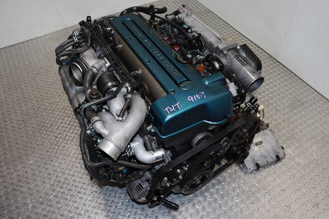
- 2JZ-GTE I6
- 3.0L twin-turbo
- 320hp
- 417 lb-ft torque
Known for reliability, tunability, andm massive power potential.
Iconic in the Supra MK4
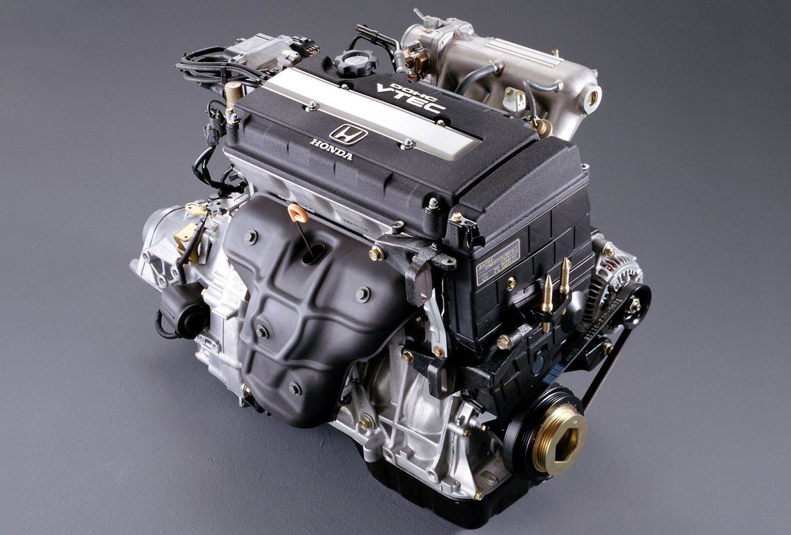
- B16B I4
- 1.6L VTEC
- 185hp
- 117 lb-ft torque
Known for hiegh revving (8,200RPM), precision engineering, and type R pedigree
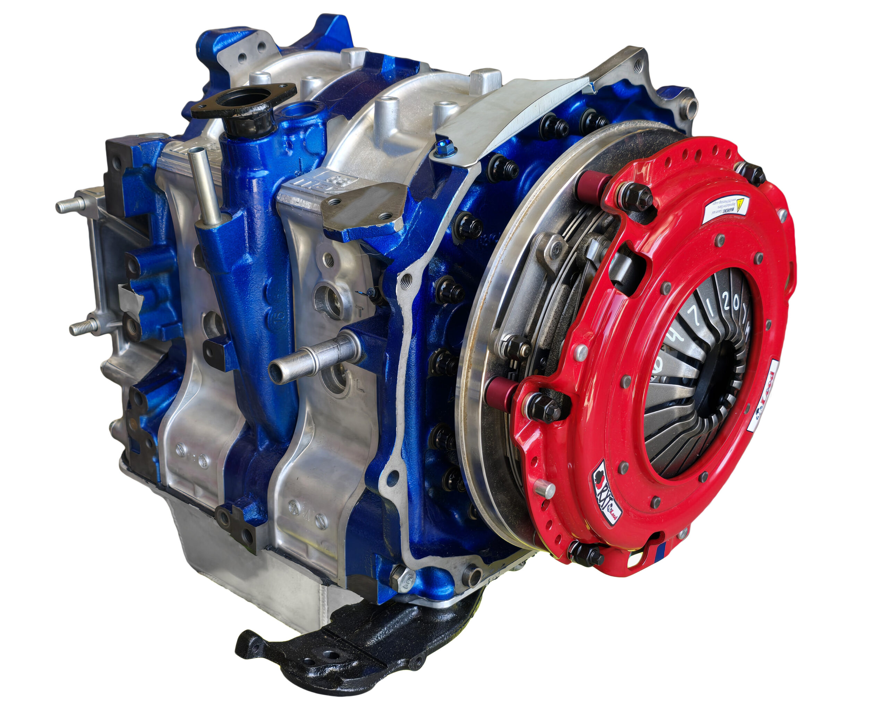
- 13B-REW Rotary
- 1.3L twin-rotor
- 255hp
- 217 lb-ft torque
Known for it's unique rotary design , high revs and RX-7 frame
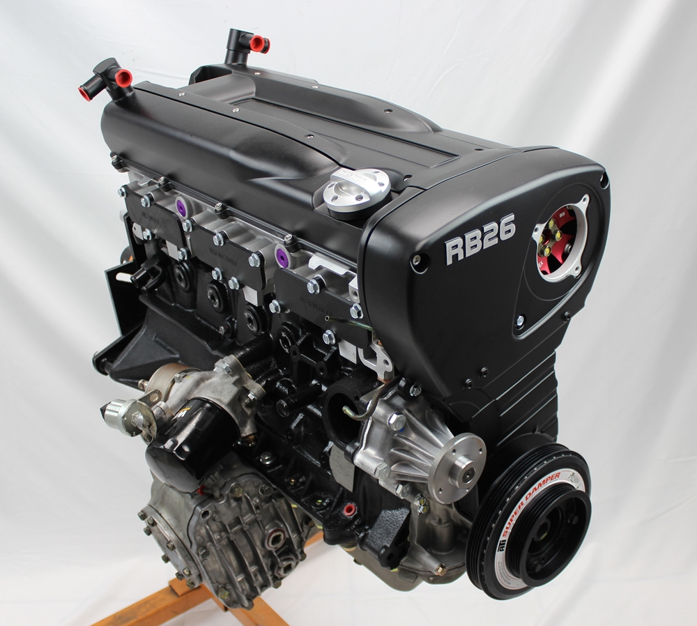
- RB26DETT I6
- 2.6L twin-turbo
- 330hp
- 300 lb-ft torque
Known for the legendary Skyline GT-R performance, tunability and Japanese street heritage
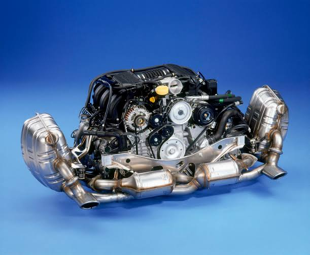
- flat-6
- 3.8L twin-turbo
- 500hp
- 482 lb-ft torque
Known for it's iconic design, rear-engine layout popular in 911 motorsport dominance,

- Coyote V8
- 5.0L naturally aspirated
- 460hp
- 420 lb-ft torque
Modern Mustang pack a punch power, port injection and decent fuel efficiency
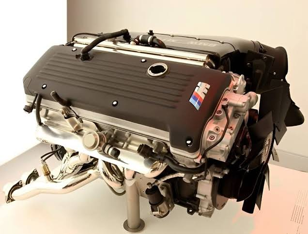
- S54 I6
- 3.2L naturally aspirated
- 338hp
- 262 lb-ft torque
Known for high revs, individual throttle bodies and E46 M3 magic
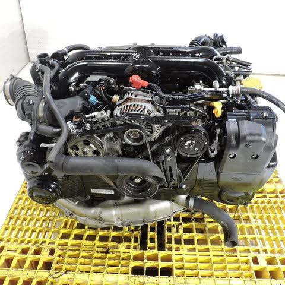
- EJ20 Boxer-4
- 2.0L turbo
- 300hp
- 300 lb-ft torque
Known for it,s symmetrical AWD, rally heritage and turbocharged grunt
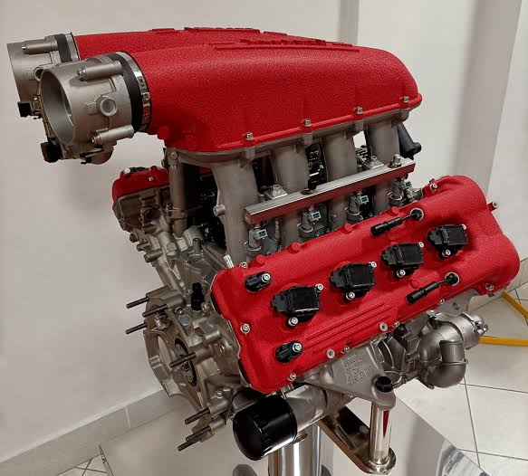
- V10 F136
- 5.7L naturally aspirated
- 620hp
- 440 lb-ft torque
Known for the traditional f1 noise, high revs and Italia pedigrees
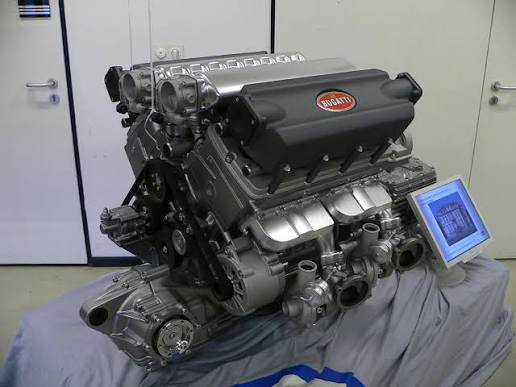
- W16.8
- 8.0L quad-turbo
- 1200hp
- 1250 lb-ft torque
Unparalleled luxury performance. 16 cylinders in Chiron with athourity
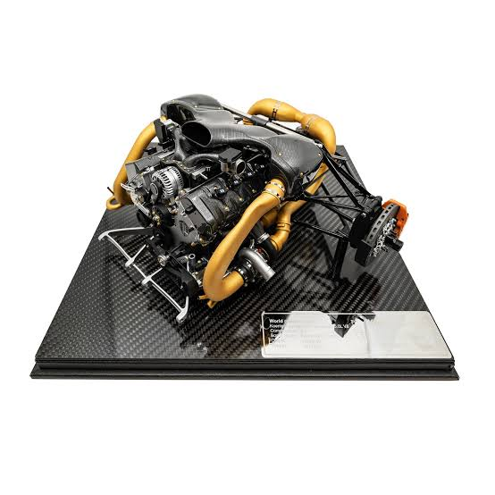
- V8 twin-turbo
- 5.0L
- 1600hp
- 1000 lb-ft torque
Known for not having a traditional flywheel, Swedish hypercar power and lightweight design
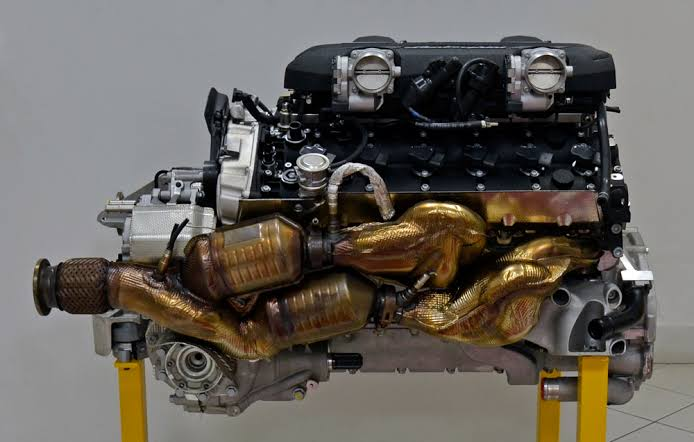
- V12 L5390
- 6.5L naturally aspirated
- 770hp
- 560 lb-ft torque
Known for iconic sound with high revs, and Aventador pedigree
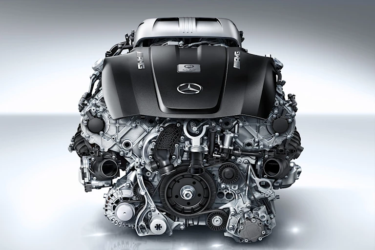
- V8 M178
- 4.0L twin-turbo
- 720hp
- 627 lb-ft torque
Known for it's German brute force and comfort
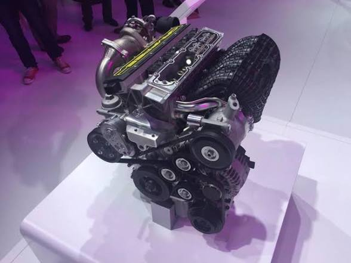
- Freevalve I4
- 2.0L twin-turbo
- 700hp
- 450 lb-ft torque
Known for innovative calmless tec and high power to weight ratio in the Gemera

- V12 AM5
- 5.9L naturally aspirated
- 600hp
- 468 lb-ft torque
Known for it's Brittish elegance v12 groundshaking growl in the Vantage heritage